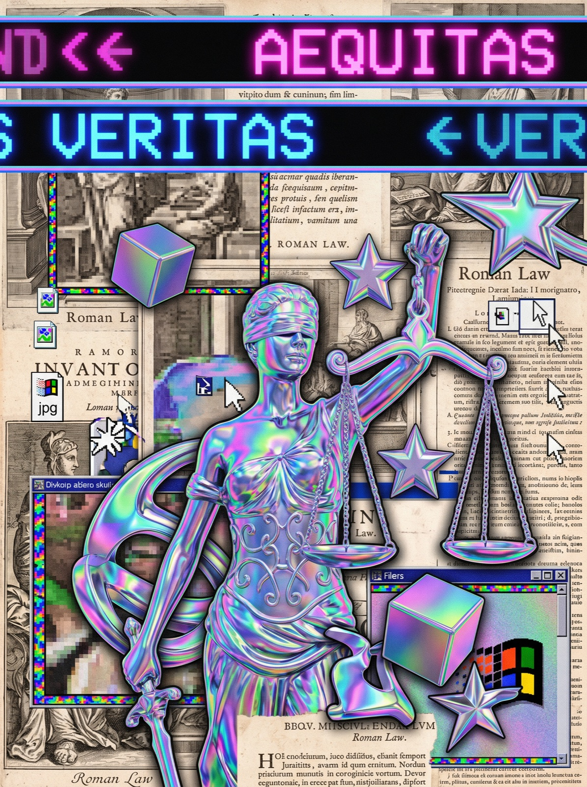
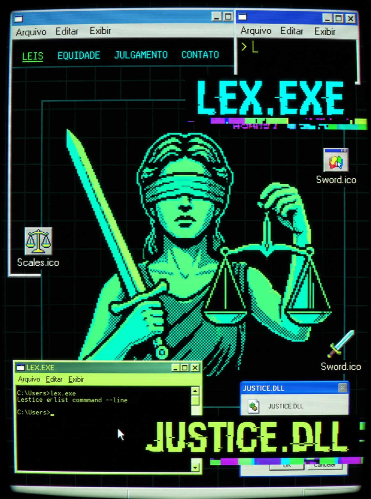
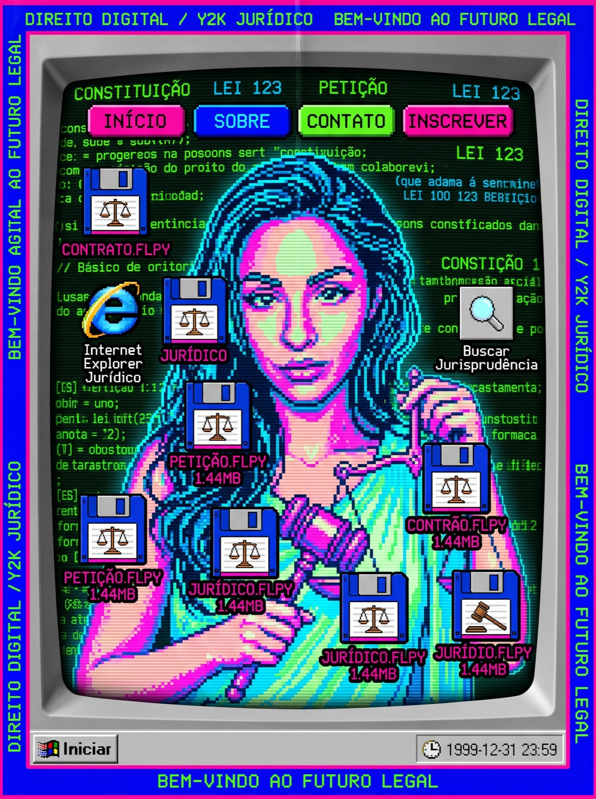
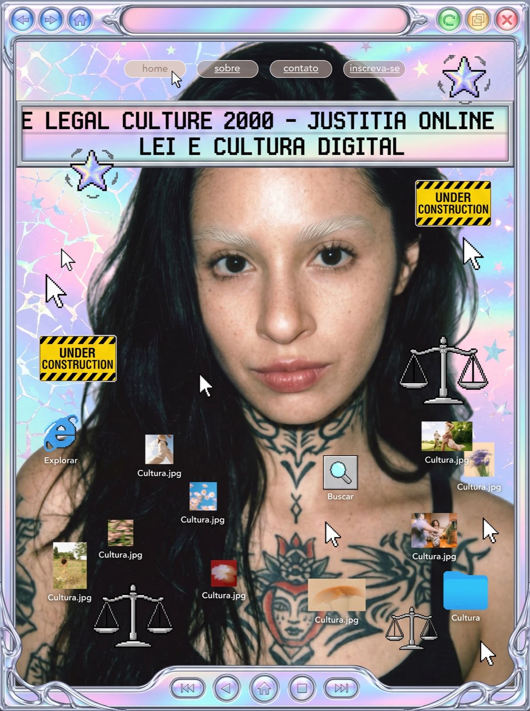
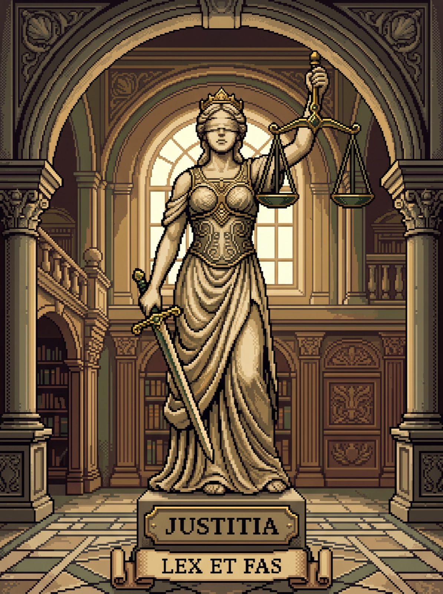
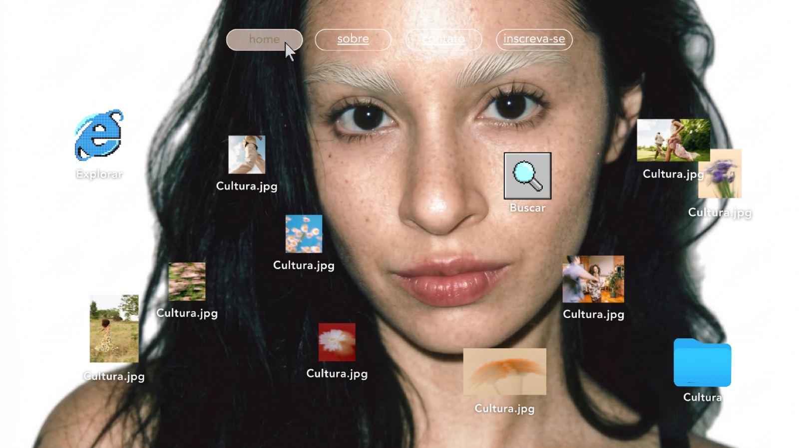
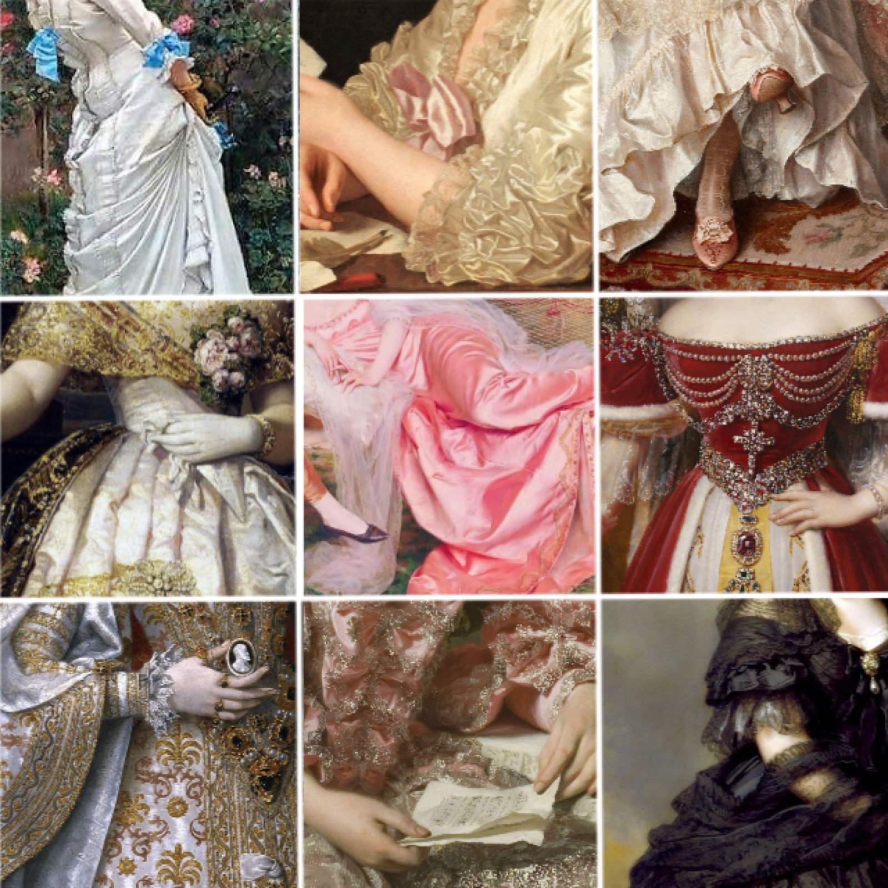

Brincadeiras visuais entre a iconografia jurídica e a estética retro-computacional — chrome, disquetes e Justitia online. Imagens decorativas, geradas com IA; ficam aqui, no site pessoal, longe da tese.
justitia_vaporwave.jpg

AEQUITAS // VERITASJustitia em cromo, edição vaporwave.
LEX.EXE

LEX.EXEA lei como software — execute por sua conta e risco.
juridico.flp

juridico.flpSalvar o direito em disquete. 1,44 MB de doutrina.
justitia.online

justitia.onlineA alegoria entra na rede.
justitia_library.jpg

justitia @ bibliotecaEntre estantes e jurisprudência.
desktop-cultura.bmp

desktop-cultura.bmpO direito como cultura de mesa de trabalho.
moodboard.jpg
moodboardA pesquisa antes da pesquisa.
vestes_detalhe.jpg

detalhe — as vestesO tecido que veste a lei.
avatar.png
a anfitriãAna, em pixel-art — a doutoranda da casa.